Paso a paso. Desde pegar el primer link hasta reanudar si cerraste el programa. Si te trabaste en un botón, está acá.
El Downloader no busca archivos por vos. Vos le pegás el link que ya tenés y le decís dónde guardarlo.
Pantalla vacía: recuadro de URL, carpeta y la lista. Todavía no hay nada en cola.
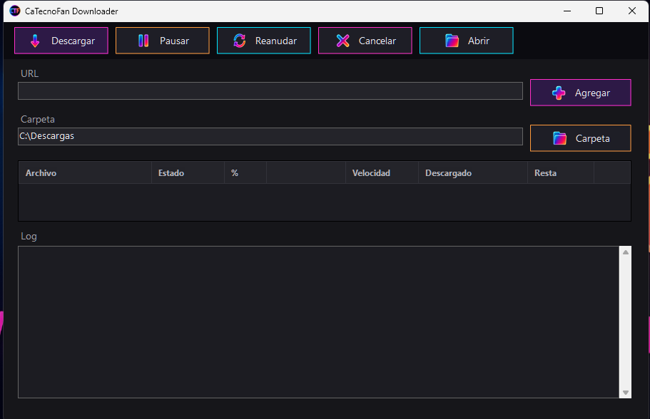
En el recuadro URL, pegá el link del archivo. Enter hace lo mismo que Agregar.
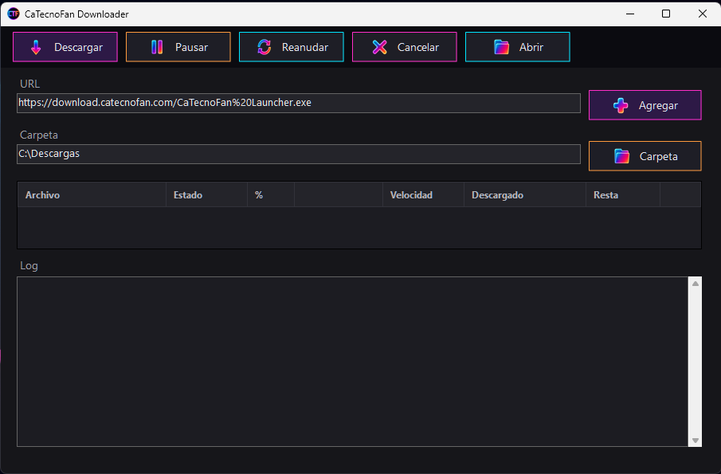
Apretá Carpeta y seleccioná dónde querés que se guarde. Si está vacío, te va a pedir que elijas una.
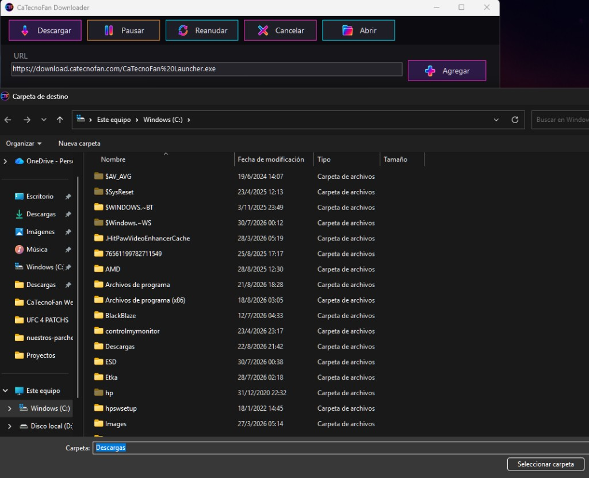
El link entra a la lista, en estado En cola. Todavía no empieza a bajar.
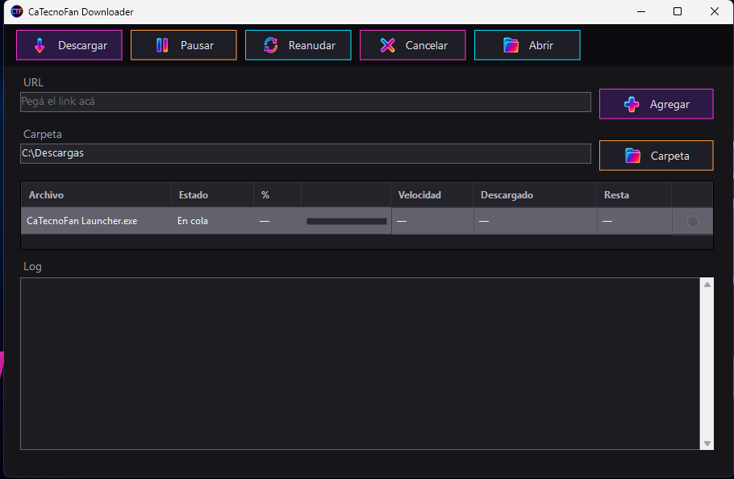
Tocá la fila para que se ilumine (gris claro). Después apretá Descargar. Consulta el servidor y arranca: ves el %, la velocidad y lo que resta.
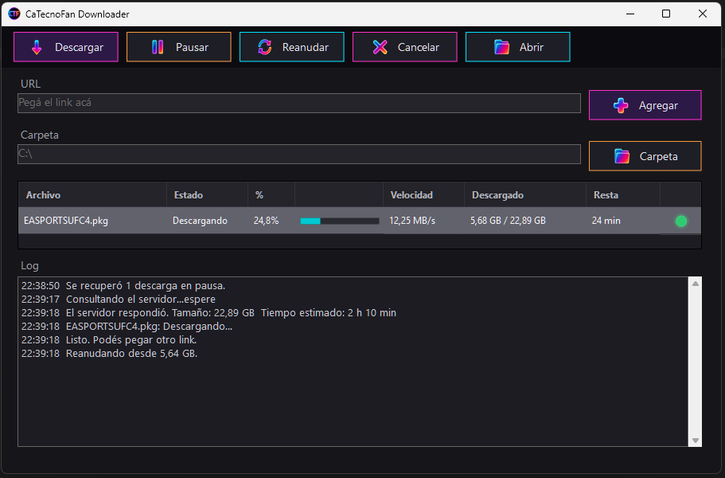
Sale este aviso con el nombre del archivo.
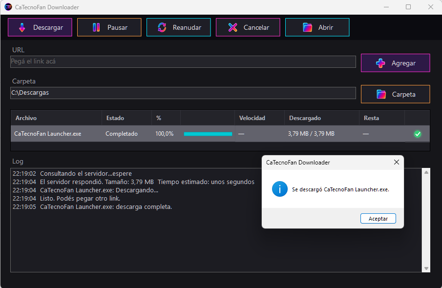
Cada archivo es una fila. Ahí ves el estado, el porcentaje, la velocidad, lo que ya bajó y lo que resta.
Un clic prende la fila. Otro clic la apaga. Pausar, Reanudar, Cancelar y Descargar actúan sobre la que está prendida.
Cada descarga tiene su propia barra chica. No hay una sola barra para todos: si bajás dos, cada uno muestra su avance.
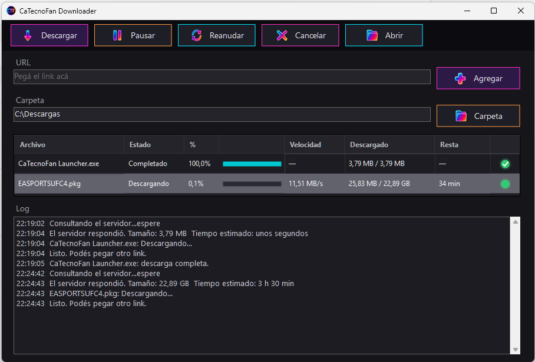
Verde está bajando. Naranja está en pausa. Rojo se canceló o hubo un error. Tilde terminó bien.
Siempre sobre la fila que está iluminada.
Selecciona la que está bajando y apretá Pausar. Queda naranja. No se borra nada.
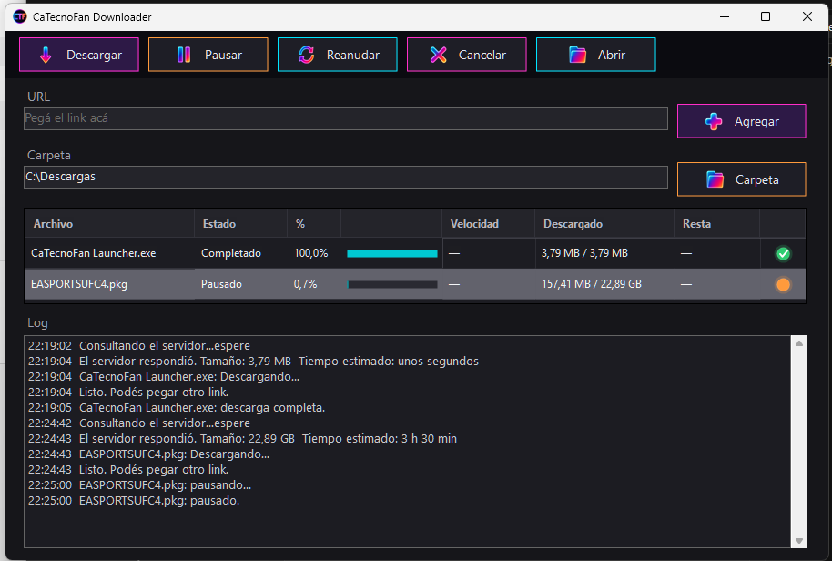
Pregunta si la querés sacar de la lista. Si decís que sí, la para (si está bajando) y la saca. El archivo a medias se queda en la carpeta: si más adelante pegás el mismo link, puede seguir desde ahí. Si decís que no, no pasa nada.
Abre la carpeta que figura arriba. Si el recuadro está vacío, abre C:\.
Para una descarga que quedó en pausa, o que volvió a la lista después de cerrar el programa.
Tiene que estar iluminada. Si no, Reanudar te avisa que no hay nada para reanudar.
Un momento puede decir Reanudando y después pasa a Descargando. Sigue desde el porcentaje que ya tenía. En el log ves desde cuántos MB retomó.
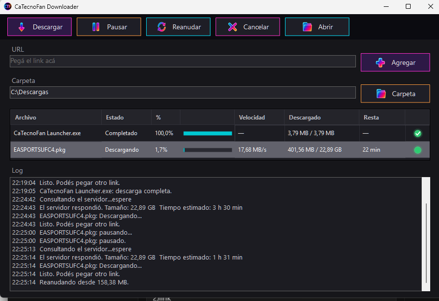
Podés tener más de una descarga activa. Cada una es independiente.
Link, carpeta, Agregar, seleccionar, Descargar.
El recuadro de URL se limpia después de Agregar, para que puedas pegar el siguiente.
Las dos filas bajan juntas. Cada una con su barra y su velocidad. Para pausar una sola, primero prendes esa fila.
No se pierde lo que ya bajó. Tampoco tenés que volver a pegar el link.
Las descargas que no terminaron se guardan. Lo que ya está en disco se queda.
Vuelven a la lista, en pausa, con el porcentaje que tenían. El log dice cuántas se recuperaron. Si apretás un botón sin prender la fila, te avisa.
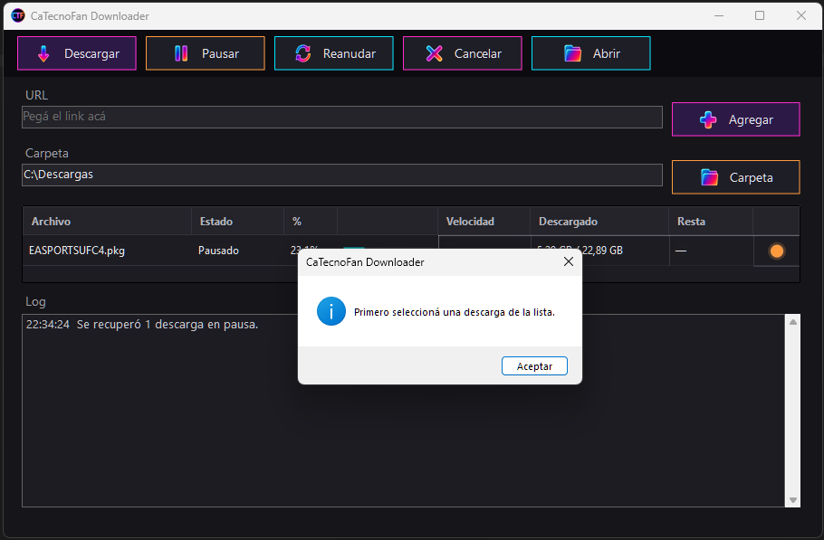
Seleccioná cada una y apretá Reanudar. No hace falta el link de nuevo.
Antes de arrancar, mira si entra. Si entra, no dice nada. Si no entra, un aviso y no empieza.
Sale un popup: cuánto hace falta y cuánto queda libre en esa unidad (por ejemplo C:).
Si ya hay otra bajando al mismo disco, también la tiene en cuenta. Así no te avisa tarde con dos archivos grandes.
Los avisos que te puede mostrar, y qué hacer.
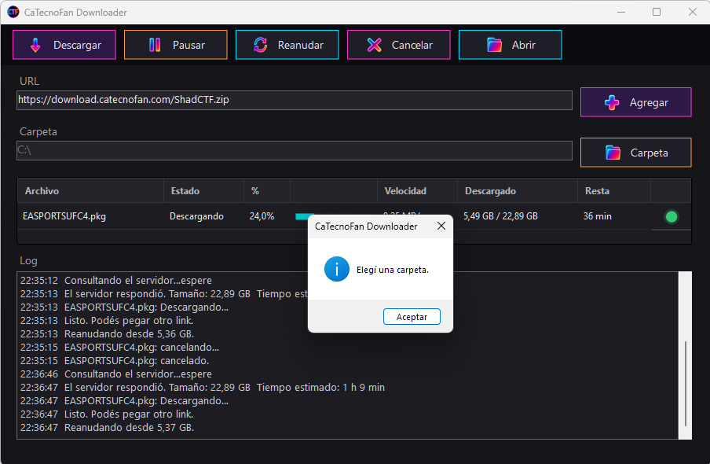
Bajá el Downloader, pegá el link y elegí la carpeta. El resto ya sabés cómo hacerlo.
Ir a la página de descarga